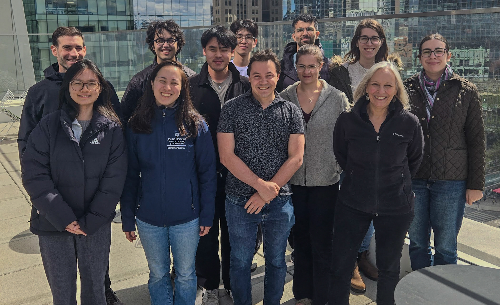
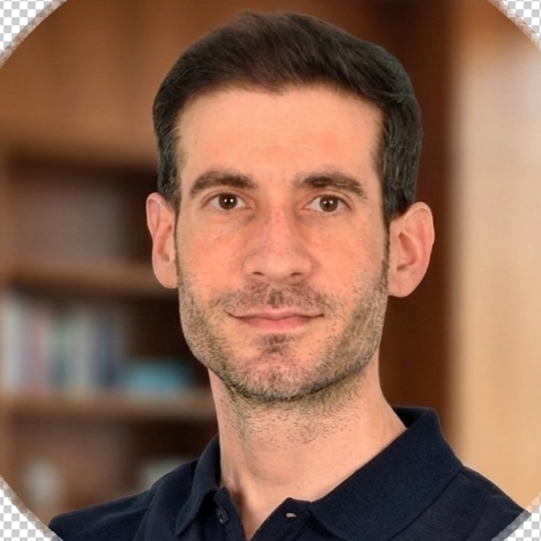
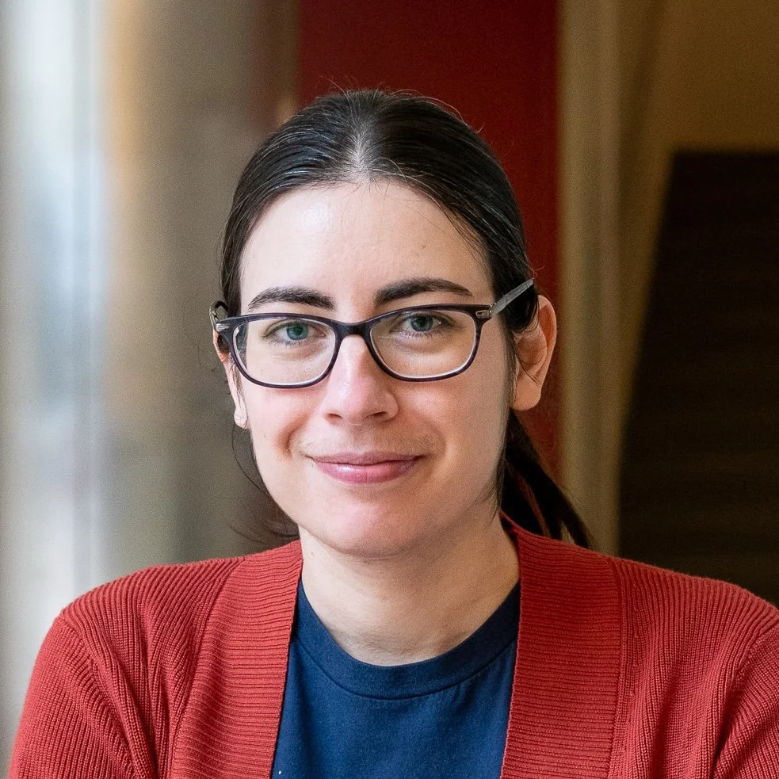

Gillian Hadfield
Bloomberg Distinguished Professor of AI Alignment and Governance
Gillian K. Hadfield is the Bloomberg Distinguished Professor of AI Alignment and Governance at School of Government and Policy and Department of Computer Science at Johns Hopkins University.
Research Interests: Computational models of human normative systems; Legal, regulatory, and technical systems for AI; Human and AI normative alignment; Multi-Agent RL systems

The Normativity Lab Team
Lab Members
Research Scientists & Postdoctoral Fellows
Harsh Satija
Vector Distinguished Postdoctoral Fellow
Harsh Satija is a postdoctoral researcher at the Vector Institute. He obtained his PhD from McGill University.

Konstantinos Mitsopoulos
Associate Research Scientist
Konstantinos Mitsopoulos investigates how cognitive processes and social dynamics shape decision-making in social dilemmas and multi-agent environments. His current work focuses on the computational foundations of normative competence: the capacity to recognize, learn, and adapt to social norms. He holds a PhD in Computational Cognitive Science from Birkbeck, University of London, an MSc in Machine Learning from University College London, and a BSc in Physics from the University of Athens. Prior to joining Johns Hopkins, he was a Research Scientist at the Florida Institute for Human & Machine Cognition.

Maria Ryskina (she/they)
CIFAR AI Safety Postdoctoral Fellow
Maria Ryskina works on training large language models to follow norms of argumentation, so that non-expert users can trust AI-generated arguments the way they trust peer-reviewed research. She is currently measuring and mitigating common argumentation failures in AI debate systems. She holds a PhD in Language & Information Technologies from Carnegie Mellon University, an MSc from Skoltech, and BSc/MSc in Applied Mathematics & Physics from Moscow Institute of Physics and Technology. She is a CIFAR AI Safety Postdoctoral Fellow at the Vector Institute.

Rebekah Gelpí
Postdoctoral Researcher
Rebekah Gelpí studies how groups of individuals—human beings or AI systems—produce emergent outcomes like norms, culture, and cooperation. She is currently investigating whether principles of cultural and genetic evolution are useful for understanding the dynamics of AI agent populations. She holds a PhD and MA in Psychology from the University of Toronto and a BA in Cognitive Science from the University of Virginia. She is affiliated with Johns Hopkins University, the Schwartz Reisman Institute for Technology & Society, and the Vector Institute.
Doctoral Students
Alexander Bernier
Visiting Doctoral Student (JHU)
Alexander Bernier has a SJD in progress from the University of Toronto, an LLM from the University of Toronto, a JD from McGill University, and a BCL from McGill University.
Andrea Wynn
PhD Student – Collaborator
Andrea Wynn's research interests span AI safety and robustness, AI alignment, and human–AI collaboration. Her work brings together ideas from machine learning and the cognitive and social sciences to create more reliable, trustworthy, human-centered AI systems. She holds an MSE in Computer Science from Princeton University and a BS in Computer Science & Mathematics from Rose-Hulman Institute of Technology.
Austen Liao
PhD Student
Austen Liao is a PhD student at Johns Hopkins University. He has a B.A. in Computer Science from the University of California, Berkeley.
Binze Li
PhD Student
Binze Li studies how AI agents can learn the unwritten rules that shape behavior in shared environments. Her goal is to help AI systems develop shared expectations in embodied settings, so they can cooperate safely and smoothly with people and with each other. She holds a BS in Statistics & Data Science and a BS in Cognitive Science from UCLA.
Iliana Maifeld-Carucci
PhD Student
Iliana Maifeld-Carucci is a PhD student at Johns Hopkins University. She has a MS in Data Science from George Washington University, and BA degrees in Mathematics and Dance from Bard College.
Kuleen Sasse (he/him)
PhD Student
Kuleen Sasse studies how AI and institutions influence one another. His work examines whether AI systems can follow institutional rules and values, how institutions such as legal systems should adapt to widespread AI use, how new AI-centered institutions might be designed, and how information flows through platforms affect democratic institutions. He is an NSF Graduate Research Fellow. He holds a BS in Computer Science and a BS in Applied Mathematics from Johns Hopkins University.
Matthew Renze (he/him)
Doctor of Engineering Student
Matthew Renze studies how to improve AI agents by providing them with cognitive abilities like planning, memory, prediction, uncertainty, and self-reflection. He is currently building an uncertainty-aware cognitive architecture for LLM agents. He holds an MS in Artificial Intelligence from JHU, a BS in Computer Science, and a BA in Philosophy from Iowa State University. He is a Microsoft MVP in AI and has taught over 600,000 software professionals worldwide.
Undergraduate Researcher
Seokhyun (Nathan) Baek (he/him)
Undergraduate Researcher
Seokhyun (Nathan) Baek studies how AI systems learn the unwritten social rules that govern collaboration by modeling what humans expect from one another. He is building a framework that lets robots model human expectations, intentions, and social norms to collaborate more naturally and safely. He holds a BS in Computer Science and Economics from Johns Hopkins University.
Navya Mehrotra (she/her)
Research Intern (BDP Summer Program)
Navya Mehrotra studies how AI systems can emulate the nuances of human judgment. Her previous NLP work develops methods for integrating diverse human perspectives into model training and evaluation. She is currently studying whether AI agents follow social norms because they genuinely internalize them or merely imitate surface-level patterns. She is a current undergraduate at Johns Hopkins University pursuing a BSc in Computer Science and a BA in Economics.
Lab Staff
Andrew Gold
Communications Associate
Andrew Gold is a communications associate working with the Normativity Lab at Johns Hopkins.
Chris LaRosa
Research Program ManagerChief of Staff to Gillian Hadfield
Chris LaRosa is a research program manager working with the Normativity Lab at Johns Hopkins.